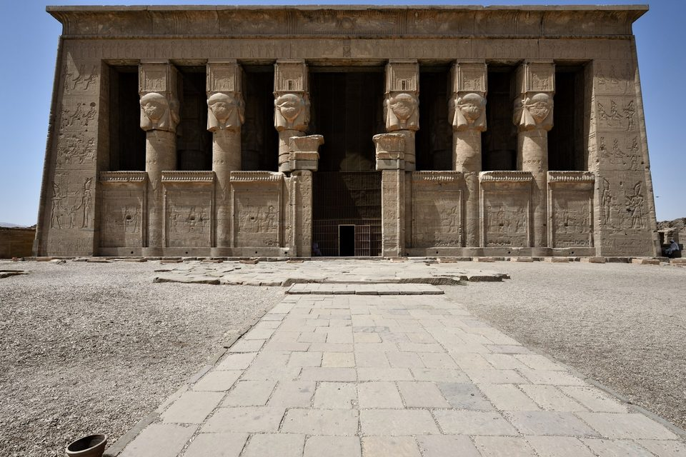

Egypt · Dendera
Temple of Hathor at Dendera audio guide
11 stops · 18 min
Billed in ZAR
Unlocks in this browser after payment.
The best-preserved temple, roof and all, of Hathor. Listen here, or get the Earwise app to play as you walk.
Stops
- 1
The Wall and the Roman Gateway
At the gateway through the mudbrick enclosure wall, on the north side of the temple precinct. This is stop 1 on the route.
Play0:00 / –:––Read along
You are at the edge of Hathor's holy ground. A thick wall of mud brick runs all the way round it. Inside lies a precinct of about forty thousand square metres. To cross this line was to leave the town and enter the estate of a goddess.
Egypt's official listing for UNESCO credits this brick wall to the Roman emperor Domitian. The stone gateway set into it carries his name, and the name of a later emperor, Trajan. Both men are carved here as pharaohs. They hold out gifts to Egyptian gods, as native kings had done for thousands of years.
On the lintel, look for a scarab beetle. To Egyptians it stood for the sun at dawn, pushing itself up into the sky. The Ministry of Tourism and Antiquities restored this north gate in the first phase of its project here. That work brought colour back to the lintel and to the ceiling of the passage.
The goddess of this place had wide powers. Hathor was a lady of the sky. She was also a goddess of music, dancing, love and mothers. The Greeks matched her with their own Aphrodite.
In ancient Egyptian the town was called Iunet. Greek and Roman writers called it Tentyra, a name found in older books.
Under the Ptolemies it was the capital of the sixth province of Upper Egypt.
Worship here is far older than the stone temple ahead. The Ministry points to traces of earlier buildings on this spot, going back to the Old Kingdom.
- 2
The Two Birth Houses and the Basilica
In front of the Roman birth house, the larger of two small temples in the north of the precinct, with the ruins of a church between them. This is stop 2 on the route.
Script and audio included when you buy - 3
The Sanatorium
By the low foundations of the sanatorium, on the north side of the main temple, close to its outer wall. This is stop 3 on the route.
Script and audio included when you buy - 4
The Façade, the Columns and the Painted Ceiling
In front of the temple's façade, at the entrance to the great columned hall, looking up at the capitals and the roof. This is stop 4 on the route.
Script and audio included when you buy - 5
The Inner Halls and the Sanctuary
Inside the temple, moving from the second hall towards the sanctuary at the centre of the building. This is stop 5 on the route.
Script and audio included when you buy - 6
The Crypts
At the entrance to the crypts, narrow stone chambers beneath the floor of the temple's central core. The crypts need their own ticket and are not always open; if they are closed, listen in the hall nearby and do not go past any barrier. This is stop 6 on the route.
Script and audio included when you buy - 7
The Processional Stairs and the Kiosk
On the processional staircase that climbs to the temple roof, then at the open kiosk at the south-west corner of the roof. The roof needs its own ticket and access changes with restoration work; if it is closed, listen at the foot of the stairs. This is stop 7 on the route.
Script and audio included when you buy - 8
The Osiris Chapels and the Zodiac
On the temple roof, at the chapels in the north-east, where a plaster cast hangs in the ceiling. Only if the roof is open on the day; otherwise listen at the foot of the stairs. This is stop 8 on the route.
Script and audio included when you buy - 9
The Rear Wall: Cleopatra and Caesarion
Outside the temple, at its rear wall, facing the large relief of Cleopatra VII and her son. This is stop 9 on the route.
Script and audio included when you buy - 10
The Temple of Isis
At the small walled temple of Isis, south of the main temple, facing its rear wall. This is stop 10 on the route.
Script and audio included when you buy - 11
The Sacred Lake
On the edge of the sacred lake, the stone-lined basin to the west of the main temple, among the palm trees. This is stop 11 on the route.
Script and audio included when you buy
On the map
All 11 stop pins for this guide are marked. Open map